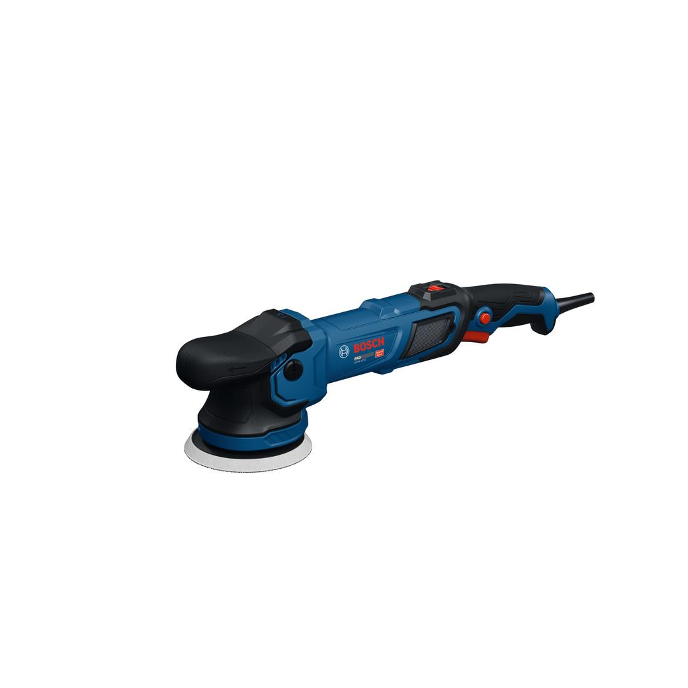

06013B10K0

| Noise level |
The A-rated noise level of the power tool is typically as follows: Sound pressure level 86 dB(A); Sound power level 94 dB(A). Uncertainty K= 3 dB. |
| Voltage, electrical |
220 V |
| Sound pressure level |
86 dB(A) |
| Sound power level |
94 dB(A) |
| Uncertainty K |
3 dB |
| Rated input power |
900 W |
| Power output |
480 W |
| Rubber sanding plate, diameter |
125 mm |
| Polishing sponge, diameter |
130 mm |
| Main handle |
Barrel |
| Tool dimensions (width) |
122 mm |
| Tool dimensions (length) |
461 mm |
| Tool dimensions (height) |
124 mm |
| Weight |
2.500 kg |
| Orbit diameter |
15 mm |
Powerful polisher for efficient and high-quality polishing tasks
Fine polishing often requires consistent power and precision to remove traces left by heavy-duty rubbing or small scratches. Professionals know that achieving a flawless finish and the desired luster can be challenging without the right tool. The PRO Heavy Duty GPX9-125S orbital polisher, with its 900W power input, 15 mm orbital stroke, 6 speed modes, and progressive trigger, is built for heavy-duty use, enabling effortless surface refinement and a polished, professional finish. Thanks to its lightweight design of just 2.5 kg and minimal vibrations, you can work long hours with reduced fatigue. The streamlined design, including a mushroom head functioning as a front handle, provide excellent grip and control. Your protection and safety are ensured with features like soft start, restart protection, and a metal dust net.
The PRO Heavy Duty GPX9-125S orbital polisher is ideal for fine and mirror polishing, effectively refining surfaces to remove traces left by heavy-duty rubbing or small scratches. It’s also perfect for polishing car glass to improve driving visibility and appearance, as well as stainless steel to enhance its look and luster.